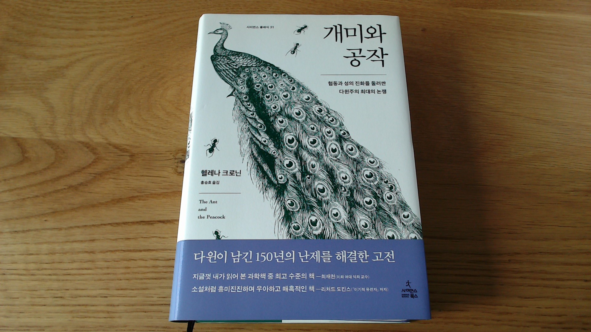

개미와 공작
01/11/2025

스스로 다윈보다 더 다윈주의자임을 자임한 사람 답게 자연 선택의 힘을 누구보다 믿은 월레스는 성 선택 역시 진화의 한 축이라는 다윈과 대립하게 된다. 공작의 꼬리를 비롯한 다양한 사례를 각자의 생각 - 자연 선택과 성 선택을 통해 설명하려 한 역사를 살펴본다.
그건 그렇고, 여성의 사회적 지위가 낮았던 시대적 상황에서 감히 암컷이 주도적으로 수컷의 형질에 영향을 미친다는 생각을 함의하는 성 선택 이론을 종의 기원 후기판에 추가한 다윈은 그 어떤 관점으로도 천재임에 틀림없다.
헬레나 크로닌다윈과 동 시대에 진화론을 주장했지만 선선히 다윈에게 발견의 우선권을 넘겨준 사람으로만 알고 있던 월레스의 행적에 대해 이야기한다.
진화론
스스로 다윈보다 더 다윈주의자임을 자임한 사람 답게 자연 선택의 힘을 누구보다 믿은 월레스는 성 선택 역시 진화의 한 축이라는 다윈과 대립하게 된다. 공작의 꼬리를 비롯한 다양한 사례를 각자의 생각 - 자연 선택과 성 선택을 통해 설명하려 한 역사를 살펴본다.
그건 그렇고, 여성의 사회적 지위가 낮았던 시대적 상황에서 감히 암컷이 주도적으로 수컷의 형질에 영향을 미친다는 생각을 함의하는 성 선택 이론을 종의 기원 후기판에 추가한 다윈은 그 어떤 관점으로도 천재임에 틀림없다.
진화론에서의 이타성에 대한 설명은 벌과 개미 등의 사회성 곤충의 반수이배체 시스템 정도가 잘 알려져 있지만 인간의 이타성이 진화적으로 안정된 전략이 될 수 있음을 이야기하는 코스미다스의 이론을 소개한다. 인간이 그다지 합리적으로 생각하지 않는다는 예로 이야기되는 카드의 앞면이 모음이면 뒷면은 짝수라야 한다 라는 명제를 증명하기 위해 확인해야 하는 사례를 드는 문제가 실은 협력과 이를 착취하는 무임 승차자의 사례로 치환하면 매우 잘 해결되며 이를 통해 인간이 협력을 잘 하기 위해 속지 않는 전략을 진화시켜 왔음을 확인할 수 있다.